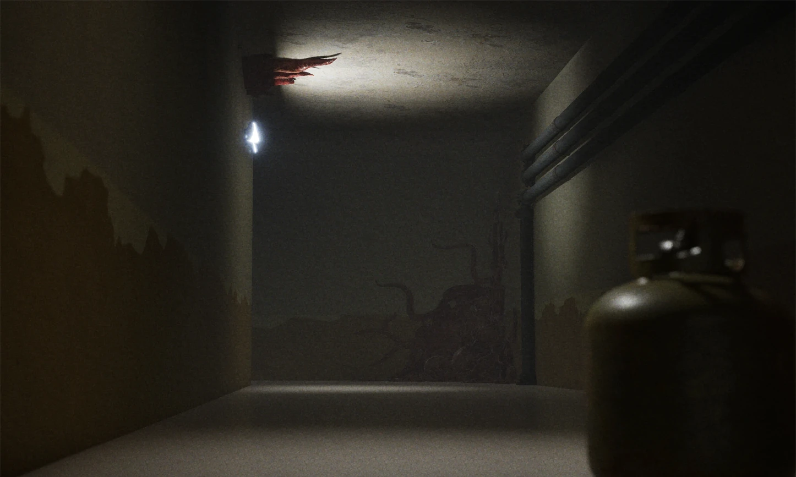

How the idea started
This project began when my friends and I decided to create a game together, and we chose the horror genre. Our inspiration came from one of our favourite games, "Backrooms: Escape Together". In that game, there is a stage where players must run and find a way out while being chased by a creature. We loved the tension and pressure of that moment, so we decided to create our own take on the concept—with our own twist.

FERAL — The Corridors